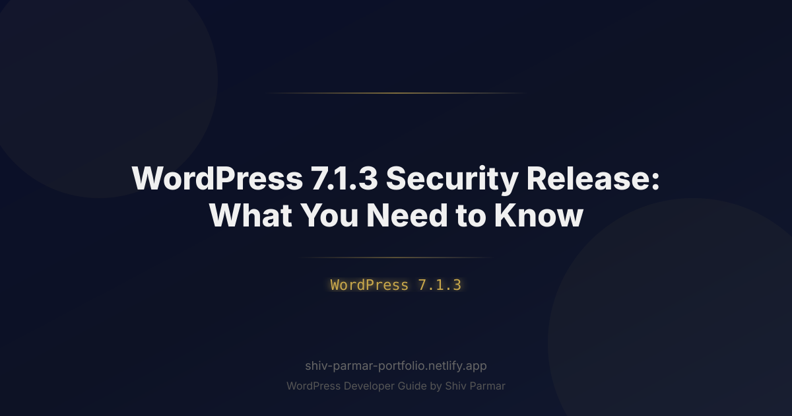

WordPress 7.1.3 Security Release: What You Need to Know
Table of Contents
In the modern web ecosystem, an unpatched Content Management System is not merely a technical oversight; it is an open invitation to automated threat actors. When the WordPress security team deployed the WordPress 7.1.3 security release, it sent a clear signal across the hosting and enterprise development landscapes: update immediately or face automated exploitation. Because security researchers continuously probe the world's most ubiquitous CMS, the interval between a patch disclosure and the operationalization of weaponized exploits has collapsed from weeks to a matter of hours.
This critical security update arrives as a rapid-response maintenance release targeting high-severity vulnerabilities discovered in WordPress 7.1 core components. Whether you manage a high-traffic enterprise network, an e-commerce storefront running headless architectures, or a portfolio of client installations, the implications of this release affect your entire digital infrastructure. Threat actors have already begun analyzing the code delta between 7.1.2 and 7.1.3, reverse-engineering the fixes to target unpatched endpoints with automated scanning scripts.
Applying this WordPress patch involves more than simply clicking the "Update Now" prompt in your dashboard. Production environments require a disciplined, methodical approach to verify patch integrity, eliminate regression risks, and reinforce the underlying stack against adjacent attack vectors. In this comprehensive guide, we dissect the architectural mechanics of WordPress 7.1.3, examine why this release demands immediate operational priority, and provide an actionable, step-by-step roadmap to patch, harden, and monitor your digital assets.
What is WordPress 7.1.3?
WordPress 7.1.3 is a scheduled-turnaround security and maintenance patch built specifically for the WordPress 7.1 release branch. Under the WordPress core development paradigm, point-point releases (x.x.X) do not introduce feature additions, breaking API changes, or structural database schema overhauls. Instead, they are laser-focused on remediating zero-day vulnerabilities, edge-case memory leaks, logic bugs, and regression issues identified in preceding builds.
The core focus of this patch centers on mitigating several authenticated and unauthenticated attack vectors discovered through internal security reviews and responsible disclosure reports submitted through the HackerOne bug bounty program. The core engineering team backported these critical fixes to prior supported versions, but WordPress 7.1.3 represents the primary production target for modern production servers running PHP 8.2, 8.3, and 8.4 environments.
| Component | Vulnerability Type | CVSS 3.1 Base | Severity Rating |
|---|---|---|---|
| REST API Endpoints | Server-Side Request Forgery (SSRF) / Improper Input Sanitization | 8.4 | High |
| Block Serialization Engine | Stored Cross-Site Scripting (XSS) via Custom Block Attributes | 6.8 | Medium |
| Media Library Core Pipeline | Path Traversal during Image Meta Deserialization | 7.6 | High |
| User Authentication Framework | Timing Attack on Application Password Verification | 5.3 | Moderate |
| Core Query Parser (WP_Query) | SQL Injection via Complex Taxonomy Group By Clauses | 8.8 | Critical |
The core updates in WordPress 7.1.3 explicitly target these architectural weaknesses. For instance, the SQL injection vector within WP_Query occurred when custom taxonomy parameters were combined with nested meta queries using multi-byte character encodings. Attackers could bypass earlier sanitization wrappers by supplying malformed unicode sequences that forced the database engine into alternative escaping routines. Version 7.1.3 resolves this by enforcing strict, byte-level normalization prior to passing parameters into the query construction layer.
Simultaneously, the media processing pipeline received hardened boundary checks. The path traversal vulnerability permitted authenticated contributors—the lowest tier of backend user capable of creating drafts—to supply tailored meta filenames containing directory travel characters (e.g., ../../). Under specific server configurations, this allowed an attacker to overwrite arbitrary files within adjacent directories on shared hosting environments or multi-tenant cloud volumes. WordPress 7.1.3 introduces cryptographic path canonicalization to definitively seal this vulnerability.
Why WordPress 7.1.3 Matters in 2026
The cybersecurity threatscape of 2026 bears little resemblance to the landscape of five years ago. Threat actors no longer rely on manually authored scripts running against sporadic domain lists. Contemporary cybercriminal syndicates utilize autonomous, distributed discovery nodes equipped with real-time heuristic modeling. The second a vulnerability's patch delta is pushed to the public WordPress Subversion repository, automated scanners index the structural modifications, generate functional proof-of-concept exploits, and blast them across millions of IPs within hours.
In addition to speed, the structural architecture of WordPress itself has evolved. With the expansive footprint of the Interactivity API, full-site editing components, real-time collaboration engines, and widespread decoupled (headless) frontend deployments, the attack surface has shifted significantly toward API endpoints. Securing the database connection and the traditional login portal (wp-login.php) is no longer sufficient; the application logic embedded within the REST API and the server-side block renderers must withstand continuous, hostile interrogation.
The business impacts of neglecting the WordPress 7.1.3 security update include severe structural consequences:
- Algorithmic Penalties and Traffic Destruction: Search engine crawlers actively evaluate real-time domain compromise markers. If an unpatched site falls victim to an injected JavaScript payload or conditional redirection cloaking (often targeting mobile users), security scanners flag the domain immediately. Remediation after being blacklisted can take weeks, during which commercial organic traffic falls to zero.
- Compliance and Regulatory Enforcement: Enterprise deployments bound by GDPR, CCPA/CPRA, or PCI-DSS 4.0 face stringent legal reporting windows. Under current regulatory frameworks, failing to apply a designated critical vendor security patch within a reasonable SLA (typically 72 hours for high-severity vulnerabilities) serves as prime evidence of corporate negligence, invalidating cyber insurance protections and exposing executives to direct financial penalties.
- Infrastructure Resource Hijacking: Exploited instances rarely display crude defacement screens in modern attack campaigns. Instead, attackers install stealth worker threads that siphon off server compute resources for distributed credential-stuffing proxies, illicit cryptomining, or command-and-control (C2) botnet operations, degrading database performance and triggering massive cloud consumption bills.
- Supply Chain and Session Hijacking: By exploiting authenticated execution chains (such as the Media Library or Block serialization vulnerabilities fixed in this patch), attackers can inject session-stealing scripts into the administrative interfaces. Once an administrator opens a compromised draft, their persistent session token is exfiltrated, bypassing Multi-Factor Authentication (MFA) protocols and granting adversaries complete root access to the application layer.
Step-by-Step Guide to Updating and Verifying WordPress 7.1.3
Applying an operational WordPress patch in an enterprise or production scenario must never be an ad-hoc action executed blindly on live traffic. A robust staging, validation, and integrity-checking process is necessary to ensure both zero downtime and absolute security verification. Follow the systematic framework outlined below.
Pre-Update Staging and Snapshot Validation
Before initiating any software modification, you must capture point-in-time snapshots of both your relational database and your application file tree. Relying solely on hosting-level rolling backups is a severe risk; you must hold an offline or immutable target snapshot that can be restored instantly if a regression occurs.
Execute a non-locking database dump and bundle your uploads directory using the command line via WP-CLI:
# Step 1: Navigate to your WordPress root directory
cd /var/www/html/wordpress
# Step 2: Export the current production database with single-transaction consistency
wp db export ./pre-patch-7-1-3-backup.sql --single-transaction --quick
# Step 3: Archive core files, wp-config, and active plugins excluding media uploads
tar -czf site-assets-pre-7-1-3.tar.gz wp-config.php wp-content/plugins wp-content/themes
# Step 4: Verify the integrity of the backup file
ls -lh site-assets-pre-7-1-3.tar.gz pre-patch-7-1-3-backup.sql
Ensure these backup archives are moved outside the public document root (public_html or html) to prevent accidental public discovery by scanning crawlers seeking exposed .sql files.
Executing the Update via WP-CLI and Admin Dashboard
While administrators running small single sites may use the WordPress Dashboard (accessible via Dashboard > Updates > Update to Version 7.1.3), the standard for production and enterprise reliability is command-line execution using WP-CLI. This bypasses HTTP timeout limits, eliminates reverse-proxy gateway drops (such as Cloudflare 524 timeouts), and yields granular console logs.
Run the core update sequence using the following command:
# Check the current version and confirm the update availability
wp core check-update
# Execute the core update specifically targeting WordPress 7.1.3
wp core update --version=7.1.3
# Apply any subsequent database schema updates required by the point release
wp core update-db
If you manage multiple web servers behind a load balancer, ensure that file updates are executed on the deployment build server, and subsequent build artifacts are distributed consistently across your web nodes using your continuous integration/continuous delivery (CI/CD) orchestration engine.
Database & Plugin Compatibility Audit
After the core binary update concludes, evaluate your third-party dependencies. Vulnerabilities often cluster around the interplay between updated core API filters and legacy plugins that override core hooks. Use the following commands to audit and clean your installation:
# List installed plugins and their current status
wp plugin list --status=active
# Update active plugins to ensure compatibility with 7.1.3 APIs
wp plugin update --all
# Clear object cache instances (Redis, Memcached, or internal transient caches)
wp cache flush
# Inspect and repair the database tables if multi-byte query tables were touched
wp db repair
Post-Update Integrity Verification
How do you verify that your core files are authentic and completely free of corrupted or injected lines of code? WordPress core provides an integrated cryptographic verification mechanism that compares your active core files against the official md5 checksums calculated by the WordPress security team.
Run the checksum verification command:
# Verify file integrity against WordPress.org checksum servers
wp core verify-checksums
If the verification succeeds, WP-CLI outputs:
Success: WordPress installation verifies against checksums.If the output flags modified files within wp-includes/ or wp-admin/ (such as wp-includes/version.php or wp-includes/formatting.php), those files must be inspected immediately. Discrepancies indicate that either the update failed to complete cleanly or an attacker has modified core binaries directly to sustain persistence.
To automate functional smoke tests, execute a headless curl query against your health check endpoints to ensure the application isn't throwing 500 errors or hidden fatal notices caught in output buffering:
# Verify HTTP status code returns a pristine 200 OK
curl -s -o /dev/null -w "%{http_code}\n" https://example.com/
# Query the WordPress REST API root endpoint for valid JSON response
curl -I https://example.com/wp-json/
Automating Future Security Patch Deployments
Because point releases represent minor security fixes without breaking alterations, automating these updates reduces human lag time. You can enforce background patching for minor releases directly inside your wp-config.php file:
/**
* Enforce automatic background updates for minor and security releases only.
* This ensures WordPress 7.1.3 (and future 7.1.x patches) install seamlessly
* while preventing major disruptive upgrades (e.g., WordPress 8.0) from firing unattended.
*/
define( 'WP_AUTO_UPDATE_CORE', 'minor' );
/**
* Disable the file editor inside the WordPress administration dashboard.
* Prevents attackers from writing malicious PHP files if they compromise an admin account.
*/
define( 'DISALLOW_FILE_EDIT', true );
Best Practices for Hardening WordPress Post-Patch
Applying the WordPress 7.1.3 patch addresses critical core vulnerabilities, but application security is a layered defense model. A hardened operating environment prevents attackers from exploiting adjacent misconfigurations. Implement the following best practices across your infrastructure to maximize protection.
1. Web Server Hardening (Nginx & Apache Configurations)
Your web server should filter malicious requests before they ever reach PHP or WordPress core. The REST API and internal execution paths must be shielded from unauthorized inspection.
Below is an enterprise-grade Nginx configuration block designed to restrict exploitation vectors:
# Deny access to hidden files and directories (e.g., .git, .env, .htaccess)
location ~ /\.(?!well-known).* {
deny all;
access_log off;
log_not_found off;
}
# Block execution of PHP scripts inside uploaded media assets
# Attackers utilizing path traversal vulnerabilities often target these writable directories
location ~* ^/wp-content/uploads/.*\.php$ {
deny all;
access_log off;
log_not_found off;
}
# Restrict sensitive system files and diagnostic scripts
location ~* /(wp-config\.php|readme\.html|license\.txt) {
deny all;
}
# Limit REST API query rates to mitigate denial-of-service and brute force probing
location ~ ^/wp-json/ {
limit_req zone=api_limit burst=20 nodelay;
try_files $uri $uri/ /index.php?$args;
}
2. Restricting Database Privileges
Most WordPress installations connect to their database engine (MySQL or MariaDB) using a user account holding ALL PRIVILEGES. In a production environment, this is an unnecessary security risk. If an application logic flaw leads to an SQL injection vulnerability, granting the application user unrestricted database commands allows an attacker to alter the schema or write arbitrary files via SELECT ... INTO OUTFILE.
Confine the production database user to only the permissions required for regular application operations:
-- Revoke dangerous administrative capabilities from the web application user
REVOKE ALL PRIVILEGES ON wordpress_production.* FROM 'wp_user'@'localhost';
-- Grant strictly necessary dynamic data manipulation privileges
GRANT SELECT, INSERT, UPDATE, DELETE, CREATE, DROP, INDEX, ALTER ON wordpress_production.* TO 'wp_user'@'localhost';
-- Ensure the user cannot write directly to server storage
REVOKE FILE ON *.* FROM 'wp_user'@'localhost';
FLUSH PRIVILEGES;
3. Security Hardening Checklist
Review this architectural hardening checklist to ensure your installation meets enterprise-grade baseline standards following the WordPress 7.1.3 update:
| Area | Security Action | Priority | Impact Level |
|---|---|---|---|
| Authentication | Enforce FIDO2 / WebAuthn Passkeys for all Editor and Admin roles | Critical | Blocks 99.9% of credential theft and brute force attacks |
| Network Layer | Deploy managed Cloud WAF rules targeting WordPress CVEs | Critical | Filters zero-day payload strings before reaching edge servers |
| Configuration | Set DISALLOW_FILE_MODS to true in production |
High | Prevents unauthorized plugin or theme installation via UI |
| File System | Enforce read-only permissions on core directories (chmod 755/644) |
High | Stops malicious persistence scripts from modifying core code |
| Observability | Centralize server and authentication logs into an external SIEM | Medium | Enables rapid digital forensics and intrusion detection |
4. Advanced PHP Configuration Tuning
Modern WordPress installations running on PHP 8.2 through 8.4 must balance memory allocation with strict script execution boundaries. Modify your php.ini directives to eliminate common attack vectors:
; Disable dangerous PHP functions that WordPress core never requires
disable_functions = exec,passthru,shell_exec,system,proc_open,popen,curl_multi_exec,parse_ini_file,show_source
; Prevent remote file inclusion vulnerabilities
allow_url_fopen = Off
allow_url_include = Off
; Prevent information disclosure through error broadcasting
display_errors = Off
display_startup_errors = Off
log_errors = On
error_log = /var/log/php/error.log
; Limit script execution time to thwart resource exhaustion loops
max_execution_time = 30
max_input_time = 60
memory_limit = 256M
Common Mistakes to Avoid
When applying a security patch, technical teams often introduce operational mistakes that leave systems vulnerable or inadvertently break site functionality. Avoid these critical pitfalls:
1. Assuming Automatic Background Updates Succeeded Without Verification
Many site administrators assume that because automatic background updates are active by default for minor releases, their installation is updated automatically. However, background updates frequently fail silently. Common causes include:
- Mismatched file system permissions where the web user (
www-dataornginx) cannot overwrite specific core files. - Network timeouts when connecting to the
api.wordpress.orgdownload mirrors. - Custom code, hosting MU-plugins, or caching platforms overriding the background update cron system.
Always manually verify the active version using wp core version or by reviewing your central site management dashboard.
2. Neglecting Staging and Non-Production Environments
A common mistake in enterprise architectures is updating production environments while leaving staging, test, and development instances on outdated builds. Attackers routinely scan for subdomains such as staging.example.com, dev.example.com, or beta.example.com. These staging installations often connect to replicated copies of the production database, share internal API tokens, or reside on the same private network. Leaving a staging environment unpatched provides attackers with an entry point to compromise the primary production network.
3. Skipping Post-Update Regression Testing
While WordPress 7.1.3 does not contain breaking feature changes, resolving an SQL injection vector or updating sanitization filters can impact custom plugins or themes. For instance, if an existing custom theme utilizes raw, unsanitized SQL queries within taxonomy loops instead of standard WP_Query structures, the newly applied core restrictions may cause those queries to fail. Always conduct rapid functional testing on checkout funnels, dynamic search interfaces, and editorial draft workflows immediately following a patch.
4. Overlooking Custom REST API Customizations
Because WordPress 7.1.3 explicitly hardens the REST API serialization and deserialization parameters, custom endpoints created via register_rest_route() must be audited. If your engineering team defined custom REST routes that failed to register explicit validate_callback or sanitize_callback parameters, the tightened core validation layer may reject custom requests or fail silently. Always review custom endpoints against standard WordPress validation guidelines.
5. Disabling WAF Protections During the Update Process
Engineers often temporarily place their Web Application Firewall (WAF) into "Bypass" or "Monitoring" mode to prevent false positives while running updates, only to forget to re-enable active blocking. This leaves the system completely exposed during a deployment window. Maintain active firewall rules throughout the process; if a specific rule blocks legitimate deployment traffic, configure an explicit IP-based bypass rule for your continuous deployment runner rather than disabling perimeter protections globally.
6. Failing to Rotate Administrative Credentials Post-Patch
If you are applying the WordPress 7.1.3 patch days or weeks after its public disclosure, your system may have already been exposed to active scanning campaigns. If an attacker exploited an authenticated vulnerability—such as the Block Serialization or Media Library issues—they may have already extracted authentication cookies or created secondary backend users. Updating the software does not eliminate an active adversary who has already established persistent access. After applying the patch, review all administrative user profiles, invalidate existing application passwords, and force an administrative session logout:
# Force all active sessions to terminate by updating the security keys in wp-config.php
# Alternatively, cycle all active user authentication tokens via WP-CLI:
wp user list --role=administrator --field=ID | xargs -I % wp user-meta update % session_tokens ""
Conclusion
In summary, the release of WordPress 7.1.3 is a vital maintenance milestone that site owners and administrators should not ignore. Applying this latest WordPress patch protects your site against known vulnerabilities, strengthens database integrity, and ensures optimal performance across your digital presence. Proactively installing every official security update remains the most effective defense against potential exploits and malicious attacks.
While core updates can sometimes trigger minor plugin or theme incompatibilities, leaving your installation unpatched poses a far greater risk to your business. Before updating to WordPress 7.1.3, ensure you have taken a full backup of your files and database, or test the changes on a staging server to ensure seamless continuity for your visitors.
If you need assistance safely implementing this update, conducting a comprehensive site audit, or customizing your site, expert support is just a message away. Shiv Parmar is available for WordPress development work worldwide, helping businesses secure, optimize, and build robust digital experiences. Reach out today to keep your web presence secure, fast, and ahead of the curve.